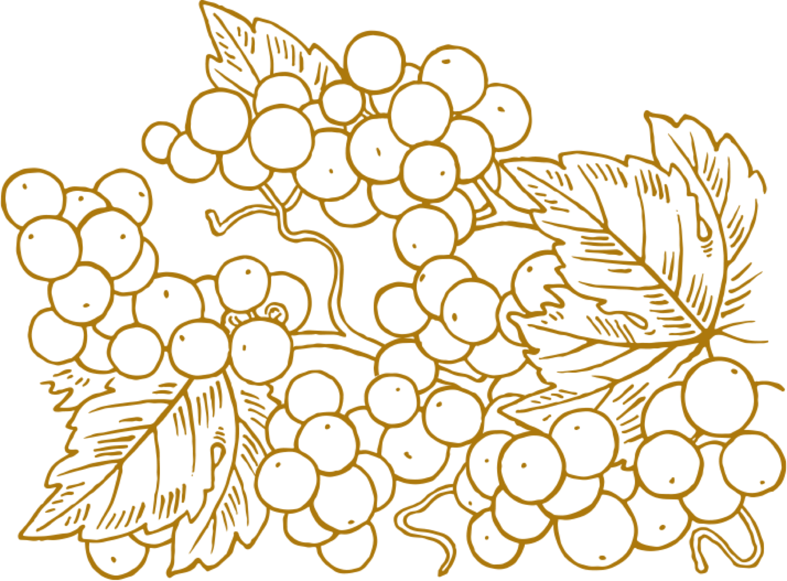
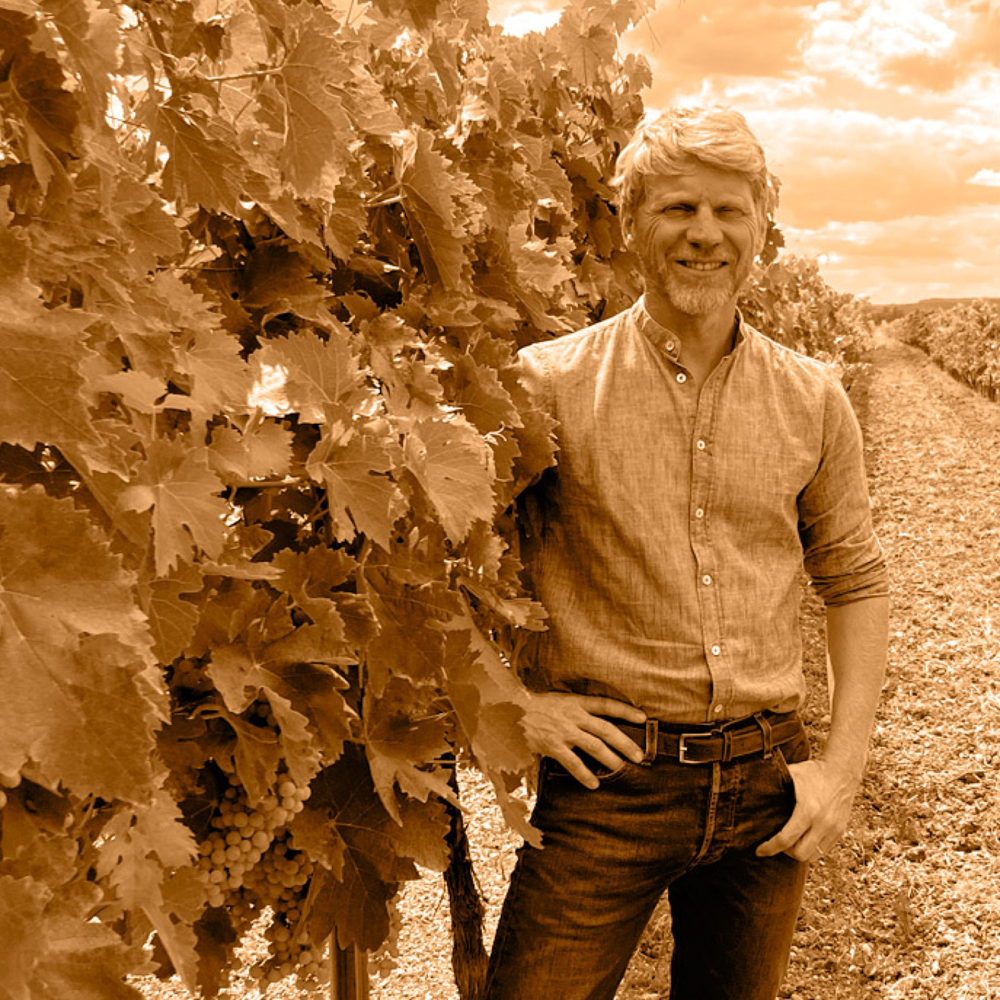

Cognac XXO
XXO
Cognac XXO issu de l’agriculture biologique, doux, structuré et très fruité.
An organic XXO Cognac, soft, structured and fruit-forward.
Nous sommes très fiers de présenter le Premier XXO en agriculture Biologique. Ce cognac est issu d’un assemblage d’eaux de vie dont la plus jeune à 14 ans. C’est un cognac structuré, très fruité. Les eaux de vie qui composent ce XXO ont vieilli dans des barriques neuves de chêne de gros grains type Limousin.
Commander à la SAQ

Dégustation
Tasting markers
Rondeur, douceur et délicatesse
Après une extraction tannique de quelques années, elles ont terminé de vieillir dans des barriques rousses, dans les chais humides du domaine familial. Ce type d’environnement offre aux eaux de vie de la rondeur et de la douceur. C’est cette douceur qui nous a permis conserver son titre à 43,5% plutôt que 40%. Nous évitons ainsi toutes dilution excessive des arômes délicats qui le composent. Léopold CROIZET
Notes sensorielles
Sensory notes
- Bouche :Cannelle, tabac et fleurs séchées, fruits confits
- Couleur :Ambrée, aux reflets dorés
- Nez :Notes explosives de fruits confits et compotées, d’épices douces de cannelle
- Palais :C’est un cognac rond et riche, structuré
- Finale :Finale fraiche, notes de réglisse
DétailDetails
Détails produitProduct details
- CatégorieCategory
- Cognac XXOCognac XXO
- OrigineOrigin
- FranceFrance
- ContenanceBottle size
- 700 ml700 ml
- Titre alcoométriqueAlcohol by volume
- 43,5 % vol43.5% vol
- CépagesGrape varieties
- Ugni Blanc, Colombard, Folle BlancheUgni Blanc, Colombard, Folle Blanche
- GTINGTIN
- 33228700114273322870011427
- GTIN variante 6 x 700 mlGTIN 6 x 700 ml variant
- 33228700114343322870011434
Valeurs nutritionnellesNutritional values
| NutrimentNutrient | Pour 3 mlPer 3 ml | Pour 100 mlPer 100 ml |
|---|---|---|
| Valeur énergétiqueEnergy | 28,5 kJ / 6,8 kcal | 951 kJ / 227 kcal |
| AlcoolAlcohol | 1,02 g | 34,3 g |
| Matières grassesFat | 0 g | 0 g |
| dont acides gras saturésof which saturates | 0 g | 0 g |
| GlucidesCarbohydrate | 0 g | 0,3 g |
| dont sucresof which sugars | 0 g | 0,3 g |
| ProtéinesProtein | 0 g | 0 g |
| SelSalt | 0 g | 0 g |